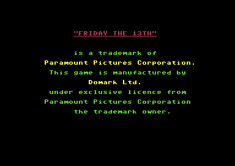
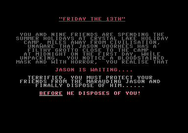
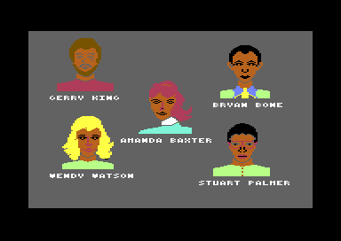

<meta charset="utf-8">
<meta name="viewport" content="width=device-width, initial-scale=1">
<title>Friday the 13th: gameplay</title>
<link rel="preconnect" href="https://fonts.googleapis.com">
<link rel="stylesheet" href="https://fonts.googleapis.com/css2?family=Lato:wght@400;700;900&family=IBM+Plex+Mono:wght@400;500&display=swap">
<style>
:root{
  --bg:#23262d; --paper:#e9e7e1; --surface:#ffffff; --surface-2:#f1efea; --line:#d5d3cc; --line-soft:#e0ded8;
  --ink:#2f3136; --ink-soft:#55585f; --ink-mute:#80838a;
  --link:#1f5fa8; --link-hover:#154480; --accent:#1f5fa8;
  --amber:#c25a00; --cyan:#1f5fa8; --coral:#d04a3a; --green:#2a8a4a; --violet:#4a5bd6; --hl:#fff0c2;
  --chip:#2f3136; --chip-ink:#ffffff;
  --c64blue:#40318d; --c64grey:#686868;
  --fd:'Lato',system-ui,sans-serif; --fb:'Lato',system-ui,sans-serif; --fm:'IBM Plex Mono',ui-monospace,Menlo,monospace;
  --col:1080px; --gx:68px; --fs:17px; --lh:1.6; --hw:900; --h1:46px; --h2:26px; --sy:48px; --pp:26px; --r:10px;
  --plate-shadow:0 1px 2px rgba(0,0,0,.05),0 4px 14px rgba(0,0,0,.05);
}
*{box-sizing:border-box}
html{background:var(--bg);min-height:100%}
body{background:var(--paper);color:var(--ink);font-family:var(--fb);font-size:var(--fs);line-height:var(--lh);max-width:var(--col);margin:0 auto;min-height:100vh;padding:0 0 4rem}
h1,h2,h3{font-weight:var(--hw);letter-spacing:-.01em;text-wrap:balance;color:var(--ink);margin:0}
.wrap{padding:0 var(--gx)}
.hero{padding:48px var(--gx) 8px;text-align:left}
.eyebrow{font-family:var(--fm);font-size:12px;letter-spacing:.08em;text-transform:uppercase;color:var(--ink-mute);margin:0 0 10px}
.hero h1{font-size:var(--h1);line-height:1.15;letter-spacing:-.02em;margin:0 0 14px}
.hero .sub{margin:0 0 .6em;color:var(--ink-soft)}
section{padding:var(--sy) 0 24px}
section:last-of-type{border-bottom:none}
.fig{font-family:var(--fm);font-size:12px;letter-spacing:.08em;text-transform:uppercase;color:var(--ink-mute);margin:0 0 10px}
h2.t{font-size:var(--h2);margin-bottom:12px}
.lede{color:var(--ink-soft);margin:0 0 30px}
.plate{background:var(--surface);border:1px solid var(--line);border-radius:var(--r);padding:var(--pp);box-shadow:var(--plate-shadow)}
.cap{font-size:14px;color:var(--ink-mute);margin-top:14px;line-height:1.55}
.cap b{color:var(--ink);font-weight:700}
code{font-family:var(--fm);font-size:.82em;background:var(--chip);color:var(--chip-ink);border-radius:4px;padding:2px 6px;overflow-wrap:break-word;-webkit-box-decoration-break:clone;box-decoration-break:clone}

.ft-grid{display:grid;gap:6px}
.ft-grid button{padding:0;position:relative;line-height:0}
.ft-grid canvas{width:100%;image-rendering:pixelated;display:block}
.ft-tag{position:absolute;left:3px;top:3px;font:500 11px/1.3 var(--fm);background:rgba(255,255,255,.88);color:var(--ink);border-radius:3px;padding:1px 4px}
.ft-mark{position:absolute;right:3px;bottom:3px;font:500 10px/1.3 var(--fm);background:var(--chip);color:var(--chip-ink);border-radius:3px;padding:1px 4px}
.ft-big canvas{width:100%;max-width:768px;image-rendering:pixelated;display:block;margin:0 auto}
.ft-table{border-collapse:collapse;font-size:14px;width:100%}
.ft-table td,.ft-table th{border-bottom:1px solid var(--line-soft);padding:5px 8px;text-align:left;vertical-align:top}
.ft-two{display:grid;grid-template-columns:1fr 1fr;gap:16px;align-items:start}
.ft-four{display:grid;grid-template-columns:repeat(3,1fr);gap:12px;margin:0 0 20px}
.ft-four .plate,.ft-two .plate{margin:0;padding:12px}
.ft-shot,.ft-px{width:100%;height:auto;image-rendering:pixelated;display:block}
.ft-wide{max-width:960px;margin:0 auto}
.plate{margin:0 0 22px}
.ft-scroll{overflow-x:auto}
.ft-lab{display:block;font-family:var(--fm);font-size:13px;color:var(--ink-soft);margin:6px 0}
.ft-range{width:100%;max-width:520px;display:block}
.ft-controls{display:grid;grid-template-columns:repeat(3,1fr);gap:14px;margin:12px 0 0}
.ft-read{font-family:var(--fm);font-size:14px;background:var(--surface-2);border-radius:6px;padding:10px 12px;margin:12px 0 0}
.ft-bar-out{height:12px;background:var(--surface-2);border:1px solid var(--line);border-radius:6px;overflow:hidden;margin:10px 0 0;max-width:520px}
.ft-bar-out div{height:100%;background:repeating-linear-gradient(45deg,var(--amber) 0 6px,#e08a3c 6px 12px)}
.ft-meter{position:relative;width:110px;height:18px;background:var(--surface-2);border:1px solid var(--line);border-radius:4px;overflow:hidden}
.ft-meter span{position:absolute;left:0;top:0;bottom:0;background:var(--cyan);opacity:.35}
.ft-meter b{position:relative;font:500 12px/18px var(--fm);padding-left:6px}
.ft-objs{white-space:nowrap}
.ft-obj{display:inline-flex;flex-direction:column;align-items:center;margin:0 3px 0 0;padding:2px;background:#222;border-radius:4px;vertical-align:top}
.ft-obj i{font:500 10px/1.2 var(--fm);color:#fff;font-style:normal}
.ft-swapped{outline:2px dashed var(--amber);outline-offset:-2px}
.ft-swapped i{text-decoration:line-through;text-decoration-color:var(--amber)}
.ft-table canvas{background:#222;border-radius:4px;image-rendering:pixelated}
.ft-dead{display:flex;flex-wrap:wrap;gap:6px;margin:12px 0 0}
.ft-dead button{font-size:12px;padding:4px 8px}
.ft-screen{display:block;width:100%;max-width:680px;height:auto;margin:0 auto;padding:18px 20px;image-rendering:pixelated;background:#000;border-radius:4px}
.ft-map{display:block;width:100%;height:auto}
.ft-bar{display:flex;flex-wrap:wrap;align-items:center;gap:8px 12px;margin:14px 0 0}
.ft-inline{display:inline-flex;align-items:center;gap:6px;margin:0}
.ft-warn{font-size:13px;color:var(--ink-mute)}
.ft-camp{margin:14px 0 0;grid-template-columns:minmax(0,3fr) minmax(0,2fr)}
.ft-roster td,.ft-roster th{padding:3px 6px;font-size:13px;white-space:nowrap}
.ft-roster .ft-meter{width:64px}
.ft-roster tr.ft-victim td{background:#f6d5cf}
.ft-roster tr.ft-victim td:first-child{box-shadow:inset 4px 0 0 var(--coral)}
.ft-roster tr.ft-jason td{background:#000;color:#fff;font-weight:700}
.ft-roster tr.ft-jason .ft-meter{border-color:#000}
.ft-roster tr.ft-jason .ft-meter b{color:var(--ink);font-weight:500}
@media (max-width:1000px){.ft-camp{grid-template-columns:1fr}}
@media (max-width:520px){.ft-roster td,.ft-roster th{padding:3px 4px;white-space:normal}.ft-roster .ft-meter{width:44px}}
@media (max-width:360px){.ft-roster td,.ft-roster th{padding:2px 3px;font-size:12px}.ft-roster .ft-meter{width:34px}}
.ft-log{list-style:none;margin:0;padding:8px 10px;font-size:13px;line-height:1.45;max-height:360px;overflow-y:auto;background:var(--surface-2);border-radius:6px}
.ft-log li{margin:0 0 6px}
.ft-log b{font-family:var(--fm);font-weight:500;margin-right:8px}
@media (max-width:760px){:root{--gx:16px;--h1:36px;--pp:14px}.ft-two,.ft-four,.ft-controls{grid-template-columns:1fr}}
sup.fn{font-size:.7em;line-height:0}
sup.fn a{text-decoration:none}
sup.fn + sup.fn::before{content:","}
.overview-shot{margin:22px 0}
.overview-shot img{width:100%;max-width:768px;height:auto;aspect-ratio:384/272;image-rendering:pixelated;display:block}
.overview-shot figcaption{font-size:14px;color:var(--ink-mute);margin-top:8px;max-width:768px}
</style>
<!-- tabs -->
<header class="hero">
  <p class="eyebrow">Commodore 64 · 1986 · Domark</p>
  <h1>Friday the 13th: gameplay</h1>
  <p class="sub">Jason hides among ten friends until the danger clock says otherwise. Walk in on a body, or watch a whole round from above as he hunts them down.</p>
</header>
<main class="wrap" data-part="game">

<section id="jumpscare">
  <p class="fig">01 · The jumpscare</p>
  <h2 class="t">A body, a picture, and a scream</h2>
  <p class="lede">The first time you walk into a room where a friend lies dead, the game rolls a number below 50. On 40 or more, one time in five, it blacks out the room, puts up a severed head or a pile of skulls, and screams for two seconds while everything stops.</p>
  <div class="plate">
    <canvas id="jscCv" class="ft-screen" width="320" height="200" aria-label="The game's screen"></canvas>
    <div class="ft-bar"><button type="button" id="jscGo">Walk into the room</button><span class="ft-warn">Shows a gory picture and plays a loud scream.</span></div>
    <p class="ft-read" id="jscSay"></p>
    <p class="cap">The game's own code plays this, frame by frame, from the moment you walk right out of room 13 with Gerry. Friend 2, who starts every round in room 14, lies dead there. Here the roll always comes up 40 or more; the picture is the game's choice, each one half the time. The scream is the game's recording, as on the <a href="music.html#scream">Music</a> tab, and the music that plays between rooms is left out.</p></div>
  <p>Walking into a room runs <a href="source-game.html#A2A2"><code>draw_room</code></a>, which turns the sprites off and calls <a href="source-game.html#C8E9"><code>scare_check</code></a> before it draws anything. The check looks for a dead friend whose place is your room. Each friend has a flag at <a href="source-game.html#09F1"><code>scare_seen</code></a>, set the first time you find their body whatever the roll, so every body gets one roll and no more.</p>
  <p>On 40 or more, your fear goes up by twice <a href="#counsellors">your counsellor's fear value</a>, to at most 80, and the play area is cleared to black. <a href="source-game.html#C93B"><code>show_gore</code></a> draws one of its <a href="graphics.html">two pictures</a>, and <a href="source-game.html#C37B"><code>scream</code></a> blanks the panel and plays the scream with the interrupts off, so nothing moves and the music halts. Then <code>draw_room</code> carries on where it left off, and the room is drawn over the picture a tile at a time.</p>
</section>

<section id="camp">
  <p class="fig">02 · The camp from above</p>
  <h2 class="t">Every room at once, while Jason hunts</h2>
  <p class="lede">You stand still in the church, where every round starts, and the game plays the round around you. Ten others wander the 44 rooms, Jason among them in disguise, until the danger clock lets him throw it off. Then he picks the most exposed, walks to them room by room, and they fall one by one.</p>
  <div class="plate">
    <canvas id="gvMap" class="ft-map" width="1080" height="448" aria-label="All 44 rooms, with everyone in the camp"></canvas>
    <div class="ft-bar"><button type="button" id="gvGo" aria-pressed="false">Play</button><label class="ft-lab ft-inline">Speed <select id="gvSpeed"><option value="1">real time</option><option value="2">2 times</option><option value="5">5 times</option><option value="10">10 times</option><option value="30" selected>30 times</option><option value="100">100 times</option></select></label><button type="button" id="gvNew">New round</button><button type="button" id="gvShow" aria-pressed="false">Show who Jason is</button><button type="button" id="gvSound" aria-pressed="false">Scream at each death</button></div>
    <div class="ft-bar-out"><div id="gvClockBar"></div></div>
    <p class="ft-read" id="gvClock"></p>
    <div class="ft-two ft-camp"><div class="ft-scroll"><table class="ft-table ft-roster" id="gvRoster"><thead><tr><th></th><th>Room</th><th>Doing</th><th>Exposure</th><th>Strength</th></tr></thead><tbody></tbody></table></div><ol class="ft-log" id="gvLog" aria-live="polite"></ol></div>
    <p class="cap">Each round is the game's own code on a copy of the C64's processor, set up as for Gerry; New round starts another, with other random numbers. A dot is a friend, numbered 0 to 9 in their own colour, and a cross is a body. Jason turns black when he reveals himself, his victim has a red ring, and the red line is his path; in the table, his row is black and his victim's is red. Times run at the game's rate, with two seconds for each scream, when the whole game stops. Doors join room 17 to the lodge, room 11 to the church, and room 9 to the barn.</p></div>
  <p>Jason chooses his victim the moment he reveals himself, by <a href="#jason">exposure</a>: whoever has the most, you included when your fear is higher than everyone's. He walks there as the others walk, a step every other pass, room to room and through the doors, and none of it depends on where you are. A friend he reaches gets one roll: he gives up unless a number below 60 falls under their exposure. Otherwise he swings until they fall, and the scream plays wherever they are.</p>
  <p>Out of your sight, there is no test of whether a blow lands. In your room each blow is a sprite, and it hits whoever it touches. Anywhere else, once he is within 13 pixels across and 4 down, every swing takes 8 strength off the victim, more for each round you have won.</p>
  <p>Watch a round where the most exposed friend is in the church with you. Jason heads for the church door in room 11, catches on the end of the fence at its gap, and stays there for the rest of the round. <a href="discoveries.html#stuck">Discoveries</a> tells why.</p>
</section>

<section id="jason">
  <p class="fig">03 · Jason</p>
  <h2 class="t">The disguise, and when it drops</h2>
  <p class="lede">At the start of each round <a href="source-game.html#9B5F"><code>pick_jason</code></a> chooses one of the ten others at random to be Jason. He walks about like everyone else until the game decides he starts killing.</p>
  <div class="plate">
    <label class="ft-lab" for="jsT">Time into the round: <b id="jsTv"></b></label>
    <input type="range" id="jsT" min="0" max="12288" step="64" value="2560" class="ft-range">
    <div class="ft-bar-out"><div id="jsClockBar"></div></div>
    <p class="ft-read" id="jsOut"></p>
    <p class="cap">The chances are worked out with the game's own <a href="source-game.html#B4A7"><code>random</code></a>: a byte from the sound chip's noise with the raster line's low bit ORed in, reduced by repeated subtraction. Times assume 4.48 frames between counts, the rate in play, and no blows on friends.</p></div>
  <p>The round's clock is <a href="source-game.html#0821"><code>danger_clock</code></a>. It starts at 0 and rises by 2 every 128 counts of <a href="source-game.html#08D5"><code>pass_count</code></a>, which counts once every two passes of the game's loop, about every 4.5 frames. At $C0 the time is up, about 18 minutes in. Hitting an innocent friend with a weapon also adds 2.</p>
  <p>Every 256 counts, about every 23 seconds, <a href="source-game.html#A24C"><code>jason_reveal</code></a> draws a number below the clock plus 20, and Jason reveals himself when the number falls below the clock. The chance is close to clock ÷ (clock + 20): nothing at the start, a third at a clock of 10, and nine in ten by the end. Over ten tries that adds up quickly, so Jason has almost always thrown off the disguise within four minutes. When he does, tune 4 starts and he picks a victim. A hunt he gives up sends him back to wandering (<a href="source-game.html#B864"><code>jason_give_up</code></a>), and the next try can set him off again.</p>
  <p>The victim is whoever is most exposed. Each of the ten starts the round with a random exposure from 10 to 74 at <a href="source-game.html#092E"><code>actor_exposure</code></a>, and every attack by Jason raises everyone's by 2. Your fear sits in the same table, so you become the victim if your fear is higher than every friend's exposure. Jason leaves out himself and anyone sheltering in the safe room, but not the dead, as <a href="discoveries.html#dead-victim">Discoveries</a> shows.</p>
  <p>The hunt is <a href="source-game.html#B7B4"><code>jason_hunt</code></a>. Jason walks towards the victim's room. When he arrives, a friend gets one chance: Jason gives up and goes home unless a number below 60 falls under that friend's exposure. You get no such chance, because the check is only for friends. Otherwise the victim panics, and the attack raises everyone's exposure by 2 and your fear by your counsellor's fear value.</p>
  <p>Once Jason is within 13 pixels across and 4 down, he swings. Each blow that lands takes 8 strength, plus one for each round you have won (<a href="source-game.html#BD9D"><code>jason_blow_lands</code></a>). When the victim's strength falls below zero, they die with a scream.</p>
</section>

<section id="counsellors">
  <p class="fig">04 · The counsellors</p>
  <h2 class="t">Five counsellors, each with a weakness</h2>
  <p class="lede">The profile of each counsellor hints at a hidden weakness. In the code, the weakness is three numbers and a list of the weapons each one can use.</p>
  <div class="plate ft-scroll"><table class="ft-table" id="csTable"><thead><tr><th>Counsellor</th><th></th><th>Strength</th><th>Fear value</th><th>The eleven objects, as this counsellor finds them</th></tr></thead><tbody></tbody></table>
    <p class="cap">From <a href="source-game.html#941E"><code>counsellor_strength</code></a>, <a href="source-game.html#9419"><code>counsellor_fear</code></a>, <a href="source-game.html#9423"><code>counsellor_colour</code></a> and <a href="source-game.html#9A41"><code>counsellor_weapons</code></a>, drawn with the game's sprites. A crossed-out object is one this counsellor finds as another, shown in its place.</p></div>
  <p>Strength is what Jason's blows take away, and it is drawn as the weights on the bar in the panel. The fear value is added to your fear each time Jason attacks a friend, and twice over when you walk into a room with a body in it for the first time and the game decides, one time in five, to show it full screen (<a href="source-game.html#C8E9"><code>scare_check</code></a>). Amanda frightens most easily and Gerry least.</p>
  <p>Weapons depend on who picks them up. When a counsellor takes an object, <a href="source-game.html#A5AA"><code>held_weapon_types</code></a> turns it into the type this counsellor sees: Gerry can use all eleven. The others lose some of the short weapons, objects 3 to 6, and find them as another type: Wendy loses one, Amanda two, Bryan three, and Stuart all four.</p>
</section>

<section id="weapons">
  <p class="fig">05 · Weapons</p>
  <h2 class="t">Thrown, swung, and swung long</h2>
  <p class="lede">At the start of each round <a href="source-game.html#9A7D"><code>start_play</code></a> scatters ten weapons and a cross across eleven different rooms. Fire while standing picks one up, puts it down, or swaps it; fire while walking uses it.</p>
  <div class="plate ft-scroll"><table class="ft-table" id="wpTable"><thead><tr><th>Type</th><th>Picture</th><th>Use</th><th>Strength taken</th><th>Points for hitting Jason</th></tr></thead><tbody></tbody></table>
    <p class="cap">From <a href="source-game.html#A59F"><code>object_sprite</code></a>, <a href="source-game.html#BC57"><code>weapon_damage</code></a> and <a href="source-game.html#BC61"><code>weapon_points</code></a>; the score shows each point as 10. Types 7 and 9 have the same picture. Every frame of every weapon is on the <a href="graphics.html">Graphics</a> tab.</p></div>
  <p>Types 0 to 2 fly across the room on sprite 4, 4 pixels a pass, until they leave the screen (<a href="source-game.html#B933"><code>weapon_fly</code></a>). The others are swung, held out from the counsellor in three frames. A weapon that touches a person takes its strength off theirs (<a href="source-game.html#BBAF"><code>weapon_hits</code></a>). Hit Jason and you score, and he unmasks and turns on you. Hit a friend and the danger clock jumps by 2.</p>
</section>

<section id="panel">
  <p class="fig">06 · The panel</p>
  <h2 class="t">Fear, strength, and the danger bar</h2>
  <p class="lede">The panel under the room is a text screen in the game's own characters. Move the sliders and the page runs the game's <a href="source-game.html#BFFB"><code>draw_panel</code></a> and <a href="source-game.html#C14C"><code>refresh_panel</code></a> to draw it.</p>
  <div class="plate">
    <canvas id="pnCv" width="320" height="56" class="ft-px ft-wide"></canvas>
    <div class="ft-controls">
      <label class="ft-lab">Fear <b id="pnFv"></b><input type="range" id="pnF" min="0" max="80" value="0" class="ft-range"></label>
      <label class="ft-lab">Strength <b id="pnSv"></b><input type="range" id="pnS" min="0" max="80" value="75" class="ft-range"></label>
      <label class="ft-lab">Danger clock <b id="pnCv2"></b><input type="range" id="pnC" min="0" max="192" step="2" value="0" class="ft-range"></label>
    </div>
    <div class="ft-dead" id="pnDead"></div>
    <p class="cap">The routines run unchanged on a copy of the C64's processor, over the game's memory at the start of play; the page then draws rows 18 to 24 of the screen in multicolour, with background 0 and shared colours 10 and 6, as the play interrupt sets them for the panel.</p></div>
  <p>The head is one of eight pictures, 128 bytes each at <a href="source-game.html#2D80"><code>fear_heads</code></a>, picked by your fear divided by 10 (<a href="source-game.html#C15C"><code>draw_fear_head</code></a>). The weights are a 32-byte slice of one picture at <a href="source-game.html#3180"><code>strength_picture</code></a>, picked by your strength, and the danger bar is one column of pixels for every 2 on the clock (<a href="source-game.html#C191"><code>draw_danger_bar</code></a>). Each of the ten others has a picture in its own colours, and a body in brown once dead. Take fear to 80: the head is the calm one, a bug told on <a href="discoveries.html#calm-head">Discoveries</a>.</p>
  <p>The panel is split from the room by <a href="source-game.html#A71B"><code>irq_play</code></a>, which runs twice a frame. At line $B2 it turns bitmap mode off and moves sprite 6 into the weapon box to show what you hold; at line 256 it puts both back for the room.</p>
</section>

<section id="safe-room">
  <p class="fig">07 · The safe room</p>
  <h2 class="t">A cross, and somewhere to hide</h2>
  <p class="lede">One building room each round holds the cross, object 10. That room is the safe room, chosen at random from rooms 24 to 43 by <a href="source-game.html#9B6B"><code>pick_safe_room</code></a>.</p>
  <p>Once you have walked into the safe room, touching a friend sends them there to shelter (<a href="source-game.html#BE18"><code>send_to_shelter</code></a>). The game sets <a href="source-game.html#09ED"><code>safe_room_seen</code></a> when it draws the safe room and clears it only at the next round, so the touch works in any room afterwards. A sheltering friend walks to the safe room and stays for 90 minus their exposure, counted down every 32 passes, earning a point for every step of the count (<a href="source-game.html#AF49"><code>update_actors</code></a>). Jason never picks a sheltering friend as a victim, and drops the hunt if his victim reaches shelter.</p>
  <p>Fire does nothing while you carry the cross outdoors. Pick it up and the safe room is gone: <a href="source-game.html#0985"><code>safe_object_room</code></a> becomes $FF, and <a href="source-game.html#BEB1"><code>shelter_end</code></a> sends everyone sheltering back out to wander.</p>
</section>

<section id="score">
  <p class="fig">08 · Score and rounds</p>
  <h2 class="t">Points, the bonus, and five rounds</h2>
  <p>The score is six digits at <a href="source-game.html#08DC"><code>score</code></a>, stored least significant first, with a 0 added on screen, so every point the code adds shows as 10. Points come from hitting Jason, from friends counting down in shelter, and from the bonus at the end of a round.</p>
  <p>When Jason dies, <a href="source-game.html#925E"><code>round_won</code></a> counts the friends still alive and adds 100 points, 1,000 on screen, for each, then moves you on to the next counsellor. After Stuart it starts again with Gerry. Each round won adds one to the strength every blow from Jason takes. A round won with nobody left alive pays more than one with nine survivors, a bug told on <a href="discoveries.html#bonus">Discoveries</a>.</p>
  <p>The round is lost when your strength falls below zero, with "YOU SEEM TO HAVE LOST YOUR HEAD. WHAT A SHAME......HA HA HA", or when the danger clock reaches $C0, with "YOU RAN OUT OF TIME BEFORE YOU FOUND HIM." Either ends the game: <a href="source-game.html#921E"><code>new_game</code></a> shows the score and starts again from Gerry.</p>
</section>

<section id="intro" data-part="intro">
  <p class="fig">09 · The introduction</p>
  <h2 class="t">Title, licence, story, and portraits</h2>
  <p class="lede">The first load, TITLE, is the introduction. It shows the title picture (on the <a href="index.html">Overview</a>) while <a href="music.html#scream">the scream</a> plays, then three screens that each wait for a key, and loads the game with the last of them, the portraits, still on screen.</p>
  <div class="ft-four">
    <figure class="plate"><figcaption class="cap"><b>Licence</b>, as text.</figcaption></figure>
    <figure class="plate"><figcaption class="cap"><b>Story</b>, as text.</figcaption></figure>
    <figure class="plate"><figcaption class="cap"><b>Portraits</b>, while the game loads.</figcaption></figure>
  </div>
  <p><a href="source-intro.html#2900"><code>intro_start</code></a> first moves the portraits picture out of the way, from <code>$5F40</code> up to <code>$8800</code>, because the text screens need that memory for the font and the screen. It shows the title bitmap with its colours from <code>$2DDC</code> and <code>$31DC</code> and plays the scream from <code>$3600</code>. It then prints the licence and the story through the KERNAL (<a href="source-intro.html#2A20"><code>print_string</code></a>), each waiting for a key that was not already held (<a href="source-intro.html#2D9B"><code>wait_key</code></a>). Last, it copies the portraits back into the bitmap (<a href="source-intro.html#2989"><code>show_portraits</code></a>), loads TITLE2 from device 8 (<a href="source-intro.html#2DA8"><code>load_title2</code></a>), and jumps to it at <code>$0900</code>.</p>
  <p>The story says you and nine friends are at the camp. The game has ten others besides you, because one of them is Jason.</p>
</section>

</main>

<footer style="margin:16px 0 0;padding:22px var(--gx) 0;border-top:1px solid #e0ded8;font-family:'IBM Plex Mono',ui-monospace,Menlo,monospace;font-size:12px;color:#80838a"><a href="https://github.com/gamesexplained/gamesexplained" style="color:#1f5fa8;text-decoration:none">GitHub</a> · <a href="https://discord.gg/3V9GWyRDWV" style="color:#1f5fa8;text-decoration:none">Discord</a><br>© Games Explained contributors. Write-ups, facts and symbol maps are available under <a href="https://creativecommons.org/licenses/by-sa/4.0/" style="color:#1f5fa8;text-decoration:none">CC BY-SA 4.0</a>; code under <a href="https://opensource.org/licenses/MIT" style="color:#1f5fa8;text-decoration:none">MIT</a></footer>
<script src="../../lib/c64.js"></script>
<script src="../../lib/sid.js"></script>
<script src="../../lib/cpu6502.js"></script>
<script>
/* friday-room */
// One room of the game, drawn by the game's own draw_room ($A2A2) on the kit's 6502 (C64Cpu, from
// ../../lib/cpu6502.js) over the bytes of the game's listing (ram, 64 KB). The room's area, column
// and row go where room_number leaves them; scare_check ($C8E9) and show_room_object ($A3DD), which
// read the random generator and the sprites, are skipped. Returns the bitmap and screen in m
// ($4000 and $5400), colour RAM in colour and the background colour draw_backdrop chose.
const FT_AREAS = [[0, 4, 6], [24, 3, 4], [36, 2, 2], [40, 2, 2]];   // area_base_room and area_size
function fridayRoom(ram, Cpu, room) {
  let a = 0;
  for (let i = 3; i >= 0; i--) if (room >= FT_AREAS[i][0]) { a = i; break; }
  const off = room - FT_AREAS[a][0], w = FT_AREAS[a][1], col = off % w, row = Math.floor(off / w);
  const m = ram.slice(), colour = new Uint8Array(1024);
  m[0x08B9] = a; m[0x086A] = col; m[0x086B] = row; m[0x086C] = room;
  const cpu = new Cpu.CPU(m, { port: 0x36, io: {
    read: () => 0,
    write: (ad, v) => { if (ad >= 0xD800 && ad < 0xDC00) colour[ad - 0xD800] = v & 15; },
  } });
  cpu.call(0xA2A2, {}, { maxSteps: 5e6, hooks: { 0xC8E9: c => c.rts(), 0xA3DD: c => c.rts() } });
  return { m, colour, bg: m[0x08DA], area: a, col, row };
}
// The play area: screen columns 4 to 35 and rows 0 to 15 of the multicolour bitmap, 256 by 128 pixels.
function fridayPaint(cv, r, PAL) {
  const ctx = cv.getContext('2d'), img = ctx.createImageData(256, 128);
  const rgb = PAL.map(h => [1, 3, 5].map(i => parseInt(h.substr(i, 2), 16)));
  for (let cy = 0; cy < 16; cy++) for (let cx = 0; cx < 32; cx++) {
    const o = cy * 40 + cx + 4, sc = r.m[0x5400 + o], cr = r.colour[o];
    for (let y = 0; y < 8; y++) {
      const b = r.m[0x4000 + o * 8 + y];
      for (let p = 0; p < 4; p++) {
        const v = (b >> (6 - 2 * p)) & 3, c = rgb[v === 0 ? r.bg : v === 1 ? sc >> 4 : v === 2 ? sc & 15 : cr];
        for (let k = 0; k < 2; k++) { const i = ((cy * 8 + y) * 256 + cx * 8 + p * 2 + k) * 4; img.data[i] = c[0]; img.data[i + 1] = c[1]; img.data[i + 2] = c[2]; img.data[i + 3] = 255; }
      }
    }
  }
  ctx.putImageData(img, 0, 0);
}
// end of friday-room

/* friday-camp */
// fridayCamp(ram, Cpu, opts): a round of the game run by the game's own code on the kit's 6502 (Cpu,
// C64Cpu on a page) over a copy of the listing's memory (ram). The round is set up as
// choose_counsellor ($92AD) and start_play ($9A7D) set it up, for counsellor opts.counsellor (0 Gerry
// to 4 Stuart), with the player in room 38, the church, where every round starts.
//   step()   one count of pass_count, as fast as it runs: two passes of the game's loop, main_loop
//            ($9BE2) to frame_tail ($9CFF), which move all ten others (update_actors, every other
//            pass), let Jason reveal himself (jason_reveal, every 256 counts), hunt and strike, and
//            run the danger clock. The player stands still.
//   frame()  one PAL frame of 19,656 cycles: the game's loop runs for FRAME_CYCLES of them, what the
//            interrupt, the screen and the sprites leave it (13,300 makes the loop count at 4.48
//            frames a count, the rate measured in play), then the interrupt's part. It returns
//            'scream' on the frame the scream starts; the interrupts are off while it plays, so the
//            next SCREAM_FRAMES frames (two seconds) run nothing, as on the C64.
//   stick(x, y)  the joystick: -1, 0 or 1 across and down, where read_stick ($A6C6) leaves them.
//   enter(room)  draws a room as walking into it does (draw_room, $A2A2), with no jumpscare.
// The interrupt itself is not run: no music, and the joystick is what stick() sets. Its waits are
// passed as frames go by. The sound chip's noise, which the game's random ($B4A7) reads, comes from
// opts.seed's own sequence; opts.scare, when 'head' or 'skulls', makes scare_check ($C8E9) bring up
// that picture whenever it finds a body. Sprites touching ($D01E) is worked out from the sprites the
// game places in the player's room, so a blow there lands only where it touches, as on the C64;
// nothing touches the room's picture ($D01F reads 0).
const FRAME_CYCLES = 13300, SCREAM_FRAMES = 100;
function fridayCamp(ram, Cpu, opts) {
  const o = opts || {}, m = ram.slice(), vic = new Uint8Array(0x30), colour = new Uint8Array(1024);
  let seed = (o.seed >>> 0) || 1, force = -1, screams = 0;
  const rnd = () => { seed ^= seed << 13; seed >>>= 0; seed ^= seed >>> 17; seed ^= seed << 5; seed >>>= 0; return seed & 255; };
  // Sprites touching: each enabled sprite's pixels (multicolour, 24 by 21, x doubled) against every other's
  function collisions() {
    const on = vic[0x15], spr = [];
    for (let s = 0; s < 8; s++) {
      if (!(on >> s & 1)) continue;
      spr.push({ s, x: vic[s * 2] + (vic[0x10] >> s & 1 ? 256 : 0), y: vic[s * 2 + 1], p: m[0x57F8 + s] * 64 + 0x4000, mc: vic[0x1C] >> s & 1 });
    }
    let hit = 0;
    for (let i = 0; i < spr.length; i++) for (let j = i + 1; j < spr.length; j++) {
      const a = spr[i], b = spr[j];
      if (Math.abs(a.x - b.x) < 24 && Math.abs(a.y - b.y) < 21 && touch(a, b)) hit |= 1 << a.s | 1 << b.s;
    }
    return hit;
  }
  function px(sp, x, y) {
    if (x < 0 || x >= 24 || y < 0 || y >= 21) return false;
    const byte = m[sp.p + y * 3 + (x >> 3)];
    return sp.mc ? (byte >> (6 - (x & 6)) & 3) !== 0 : (byte >> (7 - (x & 7)) & 1) !== 0;
  }
  function touch(a, b) {
    for (let y = 0; y < 21; y++) for (let x = 0; x < 24; x++) if (px(a, x, y) && px(b, x + a.x - b.x, y + a.y - b.y)) return true;
    return false;
  }
  const cpu = new Cpu.CPU(m, { port: 0x36, io: {
    read(a) {
      if (a === 0xD41B) { if (force >= 0) { const v = force; force = -1; return v; } return rnd(); }
      if (a === 0xD012) return rnd() & 1;
      if (a === 0xD01E) return collisions();
      if (a === 0xD01F) return 0;
      if (a >= 0xD000 && a < 0xD030) return vic[a - 0xD000];
      if (a >= 0xD800 && a < 0xDC00) return colour[a - 0xD800];
      if (a === 0xDC00 || a === 0xDC01) return 0xFF;
      return 0;
    },
    write(a, v) {
      if (a >= 0xD000 && a < 0xD030) vic[a - 0xD000] = v;
      else if (a >= 0xD800 && a < 0xDC00) colour[a - 0xD800] = v & 15;
    },
  } });
  // CHROUT and PLOT, as much of them as the game uses: the screen at $0288's page, the cursor at
  // $D6 (row) and $D3 (column), the colour at $0286, clear screen ($93), return, and colour codes.
  const INK = { 0x90: 0, 0x05: 1, 0x1C: 2, 0x9F: 3, 0x9C: 4, 0x1E: 5, 0x1F: 6, 0x9E: 7, 0x81: 8, 0x95: 9, 0x96: 10, 0x97: 11, 0x98: 12, 0x99: 13, 0x9A: 14, 0x9B: 15 };
  function chrout(a) {
    const scr = m[0x0288] << 8;
    if (a === 0x93) { m.fill(0x20, scr, scr + 1000); colour.fill(m[0x0286] & 15, 0, 1000); m[0xD6] = m[0xD3] = 0; return; }
    if (a === 0x0D) { m[0xD6]++; m[0xD3] = 0; return; }
    if (INK[a] !== undefined) { m[0x0286] = INK[a]; return; }
    const code = a < 0x20 || (a >= 0x80 && a < 0xA0) ? -1 : a < 0x40 ? a : a < 0x60 ? a - 0x40 : a < 0x80 ? a - 0x20 : a < 0xC0 ? a - 0x40 : a < 0xFF ? a - 0x80 : 0x5E;
    if (code < 0) return;
    const o = m[0xD6] * 40 + m[0xD3];
    if (o < 1000) { m[scr + o] = code; colour[o] = m[0x0286] & 15; }
    if (++m[0xD3] >= 40) { m[0xD3] = 0; m[0xD6]++; }
  }
  function plot(c) { if (c.p & 1) { c.x = m[0xD6]; c.y = m[0xD3]; } else { m[0xD6] = c.x; m[0xD3] = c.y; } }
  const FC = 0x08C7, IRQF = 0x09B7;
  let stop = false, resumed = false, wait = 0, frames = false, scream = false, over = '', count = 0;
  const hooks = {
    0xFFD2: c => { chrout(c.a); c.rts(); }, 0xFFF0: c => { plot(c); c.rts(); }, 0xFFE4: c => { c.a = 0; c.rts(); },   // the KERNAL's CHROUT, PLOT, GETIN
    0x9D2E: () => { if (m[FC] >= 2) return false; wait = 2; stop = true; return true; },   // frame_tail's waits for the
    0x9D4C: () => { if (m[FC] >= 4) return false; wait = 4; stop = true; return true; },   // interrupt's frames
    0xC3B4: () => { m[IRQF] = 1; },                                                    // scream's wait
    0x3600: c => { screams++; c.rts(); if (frames) { scream = true; return true; } },  // play_scream: the page plays it
    0xC8E9: () => { if (o.scare) force = 0xF5; },                                      // scare_check: a number of 40 or more of 50
    0xC93B: () => { if (o.scare) force = o.scare === 'head' ? 5 : 25; },               // show_gore: below 20 of 40 is the head
    0x9BE2: () => { m[IRQF] = 0; if (frames || resumed) { resumed = false; return false; } stop = true; return true; },
    0x921E: () => { over = m[0x0918] === 0 ? 'dead' : 'time'; return true; },          // new_game: the player is dead, or the time is up
    0x925E: () => { over = 'won'; return true; },                                      // round_won: Jason is dead
  };
  // choose_counsellor's settings, then start_play to its first pass
  const c = o.counsellor || 0;
  m[0x09EE] = c; m[0x09EF] = 0;
  m[0x0826] = m[0x0827] = 0;
  m[0x0820] = m[0x9414 + c]; m[0x0938] = 5; m[0x0943] = m[0x941E + c]; m[0x09F0] = m[0x9423 + c];
  for (let i = 0; i < 10; i++) m[0x09F1 + i] = 0;
  cpu.call(0x9A7D, {}, { maxSteps: 5e6, hooks });
  // The interrupt's part at line 256 of each frame that the game's logic needs: clear_hits ($BFA4),
  // which ends blows and hits, forgets Jason's victim once he is no longer hunting, and sends a
  // panicking friend who is not the victim back to wandering; and frame_count ($08C7), counted up.
  function irq() {
    const r = { a: cpu.a, x: cpu.x, y: cpu.y, p: cpu.p }, pc = cpu.pc, sp = cpu.sp, cy = cpu.cycles;
    cpu.call(0xBFA4, { sp: (sp - 8) & 0xFF }, { maxSteps: 1e4 });
    cpu.a = r.a; cpu.x = r.x; cpu.y = r.y; cpu.p = r.p; cpu.pc = pc; cpu.sp = sp; cpu.cycles = cy; m[FC]++;
    vic[0x21] = m[0x08DA];                                      // the room's background, from play_background
    if (frames) { m[0x0826] = sx; m[0x0827] = sy; }            // read_stick, from the interrupt
  }
  function pass() {
    resumed = true;
    for (;;) {
      stop = false; wait = 0;
      cpu.run({ hooks, maxSteps: 2e6 });
      if (wait) { while (m[FC] < wait) irq(); continue; }
      break;
    }
  }
  let quiet = 0, half = 0;
  function frame() {
    if (over) return '';
    if (quiet > 0) { quiet--; return ''; }
    frames = true; scream = false;
    const end = cpu.cycles + FRAME_CYCLES;
    let said = '';
    while (cpu.cycles < end && !over) {
      wait = 0;
      cpu.run({ hooks, cycles: end - cpu.cycles });
      if (scream) { said = 'scream'; quiet = SCREAM_FRAMES; break; }
      if (wait) break;                                          // waiting for the interrupt
    }
    if (!scream) irq();
    frames = false;
    const now = m[0x08D5];                                      // pass_count, for count
    if (now !== half) { count += (now - half) & 0xFF; half = now; }
    return said;
  }
  half = m[0x08D5];
  function step() {
    if (over) return;
    pass(); if (!over) pass();
    count++; half = m[0x08D5];
  }
  let sx = 0, sy = 0;
  function stick(x, y) { sx = x & 0xFF; sy = y & 0xFF; }
  function enter(room) {
    const A = [[0, 4], [24, 3], [36, 2], [40, 2]];
    let a = 0;
    for (let i = 3; i >= 0; i--) if (room >= A[i][0]) { a = i; break; }
    const col = (room - A[a][0]) % A[a][1], row = Math.floor((room - A[a][0]) / A[a][1]);
    m[0x08B9] = a; m[0x086A] = col; m[0x086B] = row; m[0x086C] = room; m[0x08EC] = a * 64 + col * 8 + row;
    const pc = cpu.pc, sp = cpu.sp, sc = o.scare;
    o.scare = null;
    cpu.call(0xA2A2, { sp: (sp - 8) & 0xFF }, { maxSteps: 5e6, hooks: Object.assign({}, hooks, { 0xC8E9: k => k.rts() }) });
    cpu.pc = pc; cpu.sp = sp; o.scare = sc;
  }
  return { m, vic, colour, cpu, step, frame, stick, enter,
    get over() { return over; }, get count() { return count; }, get screams() { return screams; } };
}

// The screen as the C64 shows it in play, from the game's memory, colour RAM and the VIC's
// registers: rows 0 to 15 the multicolour bitmap at $4000 with its colours at $5400 (columns 4 to 35;
// the room's background from $D021), rows 16 to 24 the panel's text at $5400 in the
// characters at $5800, as irq_play ($A71B) switches it at line $B2 (background black, shared colours
// 10 and 6), and over the play area the sprites the game placed, behind the room's foreground where
// their priority bit says.
function fridayScreen(s, PAL, out) {
  const m = s.m, colour = s.colour, vic = s.vic, W = 320, H = 200;
  const rgb = PAL.map(h => [1, 3, 5].map(i => parseInt(h.substr(i, 2), 16)));
  const px = out || new Uint8ClampedArray(W * H * 4), fg = new Uint8Array(W * 128);
  const put = (x, y, c) => { const i = (y * W + x) * 4, k = rgb[c & 15]; px[i] = k[0]; px[i + 1] = k[1]; px[i + 2] = k[2]; px[i + 3] = 255; };
  const bg = vic[0x21] & 15;
  for (let cy = 0; cy < 16; cy++) for (let cx = 0; cx < 40; cx++) {
    const o = cy * 40 + cx, sc = m[0x5400 + o], cr = colour[o];
    for (let y = 0; y < 8; y++) {
      const b = m[0x4000 + o * 8 + y];
      for (let p = 0; p < 4; p++) {
        const v = (b >> (6 - 2 * p)) & 3, c = v === 0 ? bg : v === 1 ? sc >> 4 : v === 2 ? sc & 15 : cr;
        const X = cx * 8 + p * 2, Y = cy * 8 + y;
        put(X, Y, c); put(X + 1, Y, c);
        if (v >= 2) fg[Y * W + X] = fg[Y * W + X + 1] = 1;
      }
    }
  }
  for (let cy = 16; cy < 25; cy++) for (let cx = 0; cx < 40; cx++) {
    const o = cy * 40 + cx, code = m[0x5400 + o], cr = colour[o], g = 0x5800 + code * 8;
    for (let y = 0; y < 8; y++) {
      const b = m[g + y], Y = cy * 8 + y;
      if (cr & 8) for (let p = 0; p < 4; p++) { const v = (b >> (6 - 2 * p)) & 3, c = [0, 10, 6, cr & 7][v]; put(cx * 8 + p * 2, Y, c); put(cx * 8 + p * 2 + 1, Y, c); }
      else for (let p = 0; p < 8; p++) put(cx * 8 + p, Y, (b >> (7 - p)) & 1 ? cr : 0);
    }
  }
  for (let sp = 7; sp >= 0; sp--) {
    if (!(vic[0x15] >> sp & 1)) continue;
    const x0 = vic[sp * 2] + (vic[0x10] >> sp & 1 ? 256 : 0) - 24, y0 = vic[sp * 2 + 1] - 50;
    const d = 0x4000 + m[0x57F8 + sp] * 64, mc = vic[0x1C] >> sp & 1, back = vic[0x1B] >> sp & 1;
    const cols = [0, vic[0x25] & 15, vic[0x27 + sp] & 15, vic[0x26] & 15];
    for (let y = 0; y < 21; y++) {
      const Y = y0 + y;
      if (Y < 0 || Y >= 128) continue;
      for (let x = 0; x < 24; x++) {
        const byte = m[d + y * 3 + (x >> 3)];
        const v = mc ? (byte >> (6 - (x & 6))) & 3 : ((byte >> (7 - (x & 7))) & 1) * 2;
        const X = x0 + x;
        if (!v || X < 32 || X >= 288 || (back && fg[Y * W + X])) continue;
        put(X, Y, cols[v]);
      }
    }
  }
  return px;
}

// The jumpscare as the page plays it: friend 2, who starts each round in room 14, lies dead there
// (friend 0 when friend 2 is Jason), and the player stands in room 13, to its left, with the
// joystick held right. opts as for fridayCamp; opts.scare picks the picture.
function fridayJumpscare(ram, Cpu, opts) {
  const C = fridayCamp(ram, Cpu, opts), m = C.m, k = m[0x0992] === 2 ? 0 : 2;
  m[0x090E + k] = 0; m[0x08E2 + k] = 0x13; m[0x08ED + k] = 120; m[0x08F8 + k] = 70;   // room 14: column 2, row 3
  C.enter(13);
  m[0x08F7] = 120; m[0x0902] = 60;
  for (let f = 0; f < 4; f++) C.frame();
  C.body = k;
  return C;
}
// end of friday-camp

/* createScreamDriver */
function createScreamDriver(M) {
  // play_scream ($3600) as a driver that sid.js calls once a bit (every M.period cycles). M.sample
  // is the bytes from $36A0: two bytes of length ($08FE), then the bits, high bit first, from
  // $36A2. A 1 bit is scream_click: volume 15, then voice 1 at frequency $F313 with a triangle and
  // the gate on. A 0 bit is scream_quiet: volume 0. The game's loop checks for the end after each
  // bit and moves to the next byte after the eighth, so it plays every bit of the length's bytes
  // and the first bit of the byte after them, then sets volume 0.
  const S = M.sample, len = S[0] | (S[1] << 8), sid = new Uint8Array(25);
  let writes = [], i = 0, b = 0, on = false, fresh = false;
  const w = (r, v) => { sid[r] = v; writes.push(r, v); };
  return {
    init() { sid.fill(0); writes = []; w(24, 0); i = 0; b = 0; on = true; fresh = true; },
    stop() { writes = []; w(24, 0); on = false; },
    play() {
      if (!fresh) writes = []; fresh = false;
      if (!on) return;
      if ((S[2 + i] << b) & 0x80) { w(24, 15); w(0, 0x13); w(1, 0xF3); w(4, 0x11); } else w(24, 0);
      if (i >= len) { w(24, 0); on = false; return; }
      if (++b === 8) { b = 0; i++; }
    },
    sid, get writes() { return writes; }, playing: () => on,
    voice() { return { volume: String(sid[24] & 15) }; },
  };
}
const SCREAM_PERIOD = 107;
// end of createScreamDriver
</script>
<script>
(function () {
  const $ = id => document.getElementById(id);
  if (typeof C64 === 'undefined' || typeof C64Cpu === 'undefined') {
    for (const id of ['jsOut', 'jscSay', 'gvClock']) if ($(id)) $(id).textContent = 'This widget needs the site\'s shared scripts: open the page from the built site.';
    return;
  }
  const P = C64.PAL, hex = (v, n = 2) => '$' + v.toString(16).toUpperCase().padStart(n, '0');
  C64.load('parts/game/listing.json').then(L => {
    const ram = L.ram;

    // Jason's reveal: the game's random below n, as a chance of falling under c
    const below = (n, c) => { let p = 0; for (let r = 0; r < 256; r++) { let v = r; while (v >= n) v -= n; if (v < c) p += (r & 1 ? 0.75 : 0.25) / 128; } return p; };
    const SEC = 4.48 / 50.12;   // seconds per count of pass_count
    const jsT = $('jsT');
    const jason = () => {
      const c = +jsT.value, clock = 2 * Math.floor(c / 128);
      let hidden = 1, last = 0;
      for (let k = 1; 256 * k <= c; k++) { last = below(4 * k - 2 + 20, 4 * k - 2); hidden *= 1 - last; }
      const s = Math.round(c * SEC);
      $('jsTv').textContent = Math.floor(s / 60) + ' min ' + String(s % 60).padStart(2, '0') + ' s (' + c + ' counts)';
      $('jsClockBar').style.width = (clock / 192 * 100) + '%';
      $('jsOut').textContent = 'Danger clock ' + clock + ' of 192 (' + hex(clock) + '). Tries so far: ' + Math.floor(c / 256) +
        (c >= 256 ? '; chance at the last try ' + Math.round(last * 100) + ' %' : '') + '. Chance that Jason has revealed himself by now: ' + (1 - hidden > 0.995 ? 'more than 99' : Math.round((1 - hidden) * 100)) + ' %.' +
        (clock >= 192 ? ' The time is up.' : '');
    };
    jsT.oninput = jason; jason();

    // Sprites
    const spr = (cv, blk, colour, s = 3) => { cv.width = 24 * s; cv.height = 21 * s; C64.drawSpriteMC(cv.getContext('2d'), ram.subarray(0x4000 + blk * 64, 0x4000 + blk * 64 + 63), 0, 0, s, P[colour], P[6], P[10]); return cv; };
    const objCv = (type, s = 2) => spr(document.createElement('canvas'), ram[0xA59F + type], ram[0xA594 + type], s);

    // Counsellors
    const CS = ['Gerry King', 'Wendy Watson', 'Amanda Baxter', 'Bryan Bone', 'Stuart Palmer'];
    const bar = (v, max, label) => { const d = document.createElement('div'); d.className = 'ft-meter'; d.innerHTML = '<span style="width:' + (v / max * 100) + '%"></span><b>' + label + '</b>'; return d; };
    CS.forEach((name, i) => {
      const tr = $('csTable').tBodies[0].insertRow();
      tr.insertCell().textContent = name;
      tr.insertCell().appendChild(spr(document.createElement('canvas'), ram[0x9414 + i], ram[0x9423 + i], 2));
      tr.insertCell().appendChild(bar(ram[0x941E + i], 80, String(ram[0x941E + i])));
      tr.insertCell().appendChild(bar(ram[0x9419 + i], 10, String(ram[0x9419 + i])));
      const td = tr.insertCell(); td.className = 'ft-objs';
      for (let o = 0; o < 11; o++) {
        const t = ram[0x9A41 + ram[0x9A78 + i] + o], f = document.createElement('span');
        f.className = 'ft-obj' + (t !== o ? ' ft-swapped' : ''); f.title = 'Object ' + o + (t !== o ? ', found as type ' + t : '');
        f.appendChild(objCv(t, 1)); const k = document.createElement('i'); k.textContent = t !== o ? o + '→' + t : o; f.appendChild(k); td.appendChild(f);
      }
    });

    // Weapons
    const KIND = t => t <= 2 ? 'thrown' : t <= 6 ? 'swung' : t <= 9 ? 'swung long' : 'the cross: makes the safe room';
    const WNAME = { 0: 'pitchfork', 2: 'knife', 7: 'axe', 9: 'axe', 10: 'cross' };
    for (let t = 0; t <= 10; t++) {
      const tr = $('wpTable').tBodies[0].insertRow();
      tr.insertCell().textContent = t + (WNAME[t] ? ', ' + WNAME[t] : '');
      tr.insertCell().appendChild(objCv(t, 2));
      tr.insertCell().textContent = KIND(t);
      tr.insertCell().appendChild(t < 10 ? bar(ram[0xBC57 + t], 8, String(ram[0xBC57 + t])) : document.createTextNode(''));
      tr.insertCell().appendChild(t < 10 ? bar(ram[0xBC61 + t], 120, (ram[0xBC61 + t] * 10).toLocaleString('en-GB')) : document.createTextNode(''));
    }

    // The panel
    const dead = new Array(10).fill(false);
    const pnDead = $('pnDead');
    for (let i = 0; i < 10; i++) {
      const b = document.createElement('button'); b.textContent = 'Friend ' + i; b.setAttribute('aria-pressed', 'false');
      b.onclick = () => { dead[i] = !dead[i]; b.setAttribute('aria-pressed', String(dead[i])); b.textContent = 'Friend ' + i + (dead[i] ? ': dead' : ''); panel(); };
      pnDead.appendChild(b);
    }
    const panel = () => {
      const m = ram.slice(), col = new Uint8Array(1024);
      m[0x0938] = +$('pnF').value; m[0x0943] = +$('pnS').value; m[0x0821] = +$('pnC').value;
      for (let i = 0; i < 10; i++) m[0x090E + i] = dead[i] ? 0 : 4;
      const cpu = new C64Cpu.CPU(m, { port: 0x36, io: { read: a => (a >= 0xD800 && a < 0xDC00 ? col[a - 0xD800] : 0),
        write: (a, v) => { if (a >= 0xD800 && a < 0xDC00) col[a - 0xD800] = v & 15; } } });
      cpu.call(0xBFFB, {}, { maxSteps: 1e7 }); cpu.call(0xC14C, {}, { maxSteps: 1e7 });
      const cv = $('pnCv'), s = 2; cv.width = 320 * s; cv.height = 56 * s;
      const ctx = cv.getContext('2d'); ctx.fillStyle = P[0]; ctx.fillRect(0, 0, cv.width, cv.height);
      const cs = m.subarray(0x5800, 0x6000);
      for (let r = 18; r < 25; r++) for (let c = 0; c < 40; c++) {
        const code = m[0x5400 + r * 40 + c], cr = col[r * 40 + c], x = c * 8 * s, y = (r - 18) * 8 * s;
        if (cr & 8) C64.drawGlyphMC(ctx, cs, code, x, y, s, [P[0], P[10], P[6], P[cr & 7]]);
        else C64.drawGlyph(ctx, cs, code, x, y, s, P[cr]);
      }
      $('pnFv').textContent = $('pnF').value + ' (head ' + ((Math.floor($('pnF').value / 10)) & 7) + ')';
      $('pnSv').textContent = $('pnS').value; $('pnCv2').textContent = $('pnC').value;
    };
    for (const id of ['pnF', 'pnS', 'pnC']) $(id).oninput = panel;
    panel();

    // The jumpscare: the game's frames, drawn as the C64 shows them
    const jc = $('jscCv'), jctx = jc.getContext('2d'), jimg = jctx.createImageData(320, 200);
    const jdraw = C => { fridayScreen(C, P, jimg.data); jctx.putImageData(jimg, 0, 0); };
    const jsay = t => { $('jscSay').textContent = t; };
    const seed = () => 1 + Math.floor(Math.random() * 0xFFFFFFFE);
    let jscene = null, jraf = 0, jsound = null;
    const jnew = () => {
      const scare = Math.random() < 0.5 ? 'head' : 'skulls', C = fridayJumpscare(ram, C64Cpu, { seed: seed(), scare });
      jdraw(C);
      jsay('Room 13. Friend ' + C.body + ' lies dead in room 14, to the right. Gerry’s fear is ' + C.m[0x0938] + '.');
      return { C, scare, f: 0, t0: 0, at: -1, room: C.m[0x086C], fear: C.m[0x0938] };
    };
    jscene = jnew();
    function jstep(now) {
      const s = jscene, C = s.C, m = C.m;
      if (!s.t0) s.t0 = now;
      let due = Math.floor((now - s.t0) * 0.05012);                // PAL frames, 50.12 a second
      if (due - s.f > 8) { s.t0 += (due - s.f - 8) / 0.05012; due = s.f + 8; }
      while (s.f < due) {
        const r = C.frame(); s.f++;
        if (m[0x086C] !== s.room) { s.room = m[0x086C]; jsay('Into room 14. Before it draws anything, draw_room calls scare_check, which finds friend ' + C.body + '’s body and rolls.'); }
        if (r === 'scream') {
          s.at = s.f; C.stick(0, 0);
          if (jsound) jsound.then(h => h.send({ cmd: 'start', tune: 0 })).catch(() => {});
          jsay('The roll is 40 or more: ' + (s.scare === 'head' ? 'the severed head' : 'the skulls') + ', and the scream. Nothing moves for two seconds. Fear ' + s.fear + ' to ' + m[0x0938] + '.');
        }
        if (s.at >= 0 && s.f === s.at + SCREAM_FRAMES + 1) jsay('The scream is over, and draw_room carries on: the room is drawn over the picture, a tile at a time.');
      }
      jdraw(C);
      if (s.at >= 0 && s.f > s.at + SCREAM_FRAMES + 150) { jraf = 0; $('jscGo').disabled = false; $('jscGo').textContent = 'Walk in again'; return; }
      jraf = requestAnimationFrame(jstep);
    }
    $('jscGo').onclick = () => {
      if (jraf) return;
      if (!jsound && typeof C64Sid !== 'undefined') {
        jsound = C64Sid.host({ driver: createScreamDriver, data: { sample: ram.slice(0x36A0, 0x3FA1) }, period: SCREAM_PERIOD, digi: 2 });
        jsound.catch(() => {});
      }
      if (jscene.f) jscene = jnew();
      jscene.C.stick(1, 0);
      $('jscGo').disabled = true;
      jsay('Walking right, out of room 13.');
      jraf = requestAnimationFrame(jstep);
    };

    // The camp from above: a round of the game, every room at once
    const AREA = [[0, 4, 0, 24, 'Outdoors'], [24, 3, 544, 24, 'The lodge'], [36, 2, 544, 316, 'The church'], [40, 2, 824, 316, 'The barn']];
    const RW = 128, RH = 64, gm = $('gvMap'), gctx = gm.getContext('2d');
    const areaOf = r => (r >= 40 ? 3 : r >= 36 ? 2 : r >= 24 ? 1 : 0);
    const roomAt = r => { const A = AREA[areaOf(r)], o = r - A[0]; return [A[2] + (o % A[1]) * RW, A[3] + Math.floor(o / A[1]) * RH]; };
    const roomOf = p => { const A = AREA[p >> 6]; return A[0] + (p & 7) * A[1] + ((p >> 3) & 7); };
    const base = document.createElement('canvas'); base.width = gm.width; base.height = gm.height;
    {
      const b = base.getContext('2d'), one = document.createElement('canvas'); one.width = 256; one.height = 128;
      b.imageSmoothingEnabled = false;
      for (let r = 0; r < 44; r++) {
        fridayPaint(one, fridayRoom(ram, C64Cpu, r), P);
        const [x, y] = roomAt(r);
        b.drawImage(one, x, y, RW, RH);
        b.fillStyle = 'rgba(0,0,0,.6)'; b.fillRect(x + 2, y + 2, r < 10 ? 12 : 19, 13);
        b.fillStyle = '#ffffff'; b.font = '500 10px "IBM Plex Mono", monospace'; b.fillText(String(r), x + 5, y + 12);
      }
      b.strokeStyle = '#d5d3cc'; b.fillStyle = '#55585f'; b.font = '700 15px Lato, system-ui, sans-serif';
      for (const A of AREA) {
        const n = A[0] === 0 ? 24 : A[0] === 24 ? 12 : 4, w = A[1] * RW, h = (n / A[1]) * RH;
        b.strokeRect(A[2] - 0.5, A[3] - 0.5, w + 1, h + 1); b.fillText(A[4], A[2], A[3] - 8);
      }
    }
    const rgb = c => P[c & 15], light = c => [1, 3, 7, 13, 15, 5, 10, 12, 14].includes(c & 15);
    const time = C => C.count * SEC + C.screams * 2;
    const mmss = t => Math.floor(t / 60) + ':' + String(Math.floor(t % 60)).padStart(2, '0');
    const who = i => (i === 10 ? 'you' : 'friend ' + i), Who = i => (i === 10 ? 'You' : 'Friend ' + i);
    let camp = null, prev = null, trail = [], reveals = 0, playing = false, acc = 0, lastT = 0, graf = 0, still = 0, stuck = false, said = false, frames = 0, sound = null;
    const blows = new Array(11).fill(0), log = $('gvLog');
    const snap = () => { const m = camp.m, J = m[0x0992]; return { st: Array.from(m.subarray(0x090E, 0x0919)), str: Array.from(m.subarray(0x0939, 0x0944)),
      place: Array.from(m.subarray(0x08E2, 0x08ED)), victim: m[0x0993], jx: m[0x08ED + J], jy: m[0x08F8 + J] }; };
    const say = (t, text) => {
      const li = document.createElement('li'), b = document.createElement('b');
      b.textContent = mmss(t); li.appendChild(b); li.appendChild(document.createTextNode(text)); log.insertBefore(li, log.firstChild);
      while (log.children.length > 80) log.removeChild(log.lastChild);
    };
    function newRound() {
      camp = fridayCamp(ram, C64Cpu, { seed: seed() });
      prev = snap(); trail = []; reveals = 0; still = 0; stuck = false; said = false; blows.fill(0); acc = 0; log.textContent = '';
      say(0, 'The round starts. You stand in room 38, the church. Jason is one of the ten others, in disguise.');
      drawMap(); roster(); clock();
    }
    function events() {
      const m = camp.m, J = m[0x0992], now = snap(), t = time(camp), js0 = prev.st[J] & 0x3F, js1 = now.st[J] & 0x3F;
      if (js1 === 7 && js0 !== 7) { trail = []; say(t, (reveals++ ? 'Jason throws off his disguise again' : 'Friend ' + J + ' is Jason. He throws off his disguise') + ' in room ' + roomOf(now.place[J]) + '.'); }
      if (js1 === 7 && now.victim !== 0xFF && (now.victim !== prev.victim || js0 !== 7)) {
        const v = now.victim, ex = v === 10 ? m[0x0938] : m[0x092E + v];
        say(t, 'He goes after ' + who(v) + ' in room ' + roomOf(now.place[v]) + (v === 10 ? ': your fear, ' + ex + ', is the highest exposure.' : now.st[v] === 0 ? ', who is already dead.' : ', exposure ' + ex + ', the highest.'));
      }
      for (let i = 0; i <= 10; i++) {
        if (i !== J && (now.st[i] & 0x3F) === 8 && (prev.st[i] & 0x3F) !== 8) say(t, 'Jason reaches ' + who(i) + ' in room ' + roomOf(now.place[i]) + (i === 10 ? '. You panic.' : '. Friend ' + i + ' panics.'));
        if (now.str[i] < prev.str[i] && js1 === 7) blows[i]++;
        if (prev.st[i] !== 0 && now.st[i] === 0 && i !== 10) say(t, Who(i) + ' dies in room ' + roomOf(now.place[i]) + (blows[i] ? ', after ' + blows[i] + (blows[i] === 1 ? ' blow.' : ' blows.') : '.'));
      }
      if (js0 === 7 && js1 !== 7 && now.st[J] !== 0) say(t, prev.victim !== 0xFF && now.st[prev.victim] !== 0 ? 'Jason gives up on ' + who(prev.victim) + ' and puts his disguise back on.' : 'Jason puts his disguise back on.');
      if (js1 === 7 && now.jx === prev.jx && now.jy === prev.jy && now.place[J] === prev.place[J]) {
        if (++still === 336 && !stuck) { stuck = true; const r = roomOf(now.place[J]); say(t, 'Jason has not moved for half a minute. He is stuck in room ' + r + (r === 11 ? ', walking into the fence outside the church.' : '.')); }
      } else still = 0;
      if (js1 === 7) { const p = dot(J); if (!trail.length || trail[trail.length - 1][0] !== p[0] || trail[trail.length - 1][1] !== p[1]) trail.push(p); if (trail.length > 3000) trail.shift(); }
      if (camp.over && !said) {
        said = true;
        say(t, camp.over === 'time' ? 'The danger clock reaches 192. Time is up, and the round is lost.' : camp.over === 'dead' ? 'Jason kills you in room 38. The round is over.' : 'Jason is dead.');
      }
      prev = now;
    }
    // A person's dot: half the room's scale, x at the middle of the sprite, y a little above the feet
    function dot(i) {
      const m = camp.m, r = roomOf(m[0x08E2 + i]), [x, y] = roomAt(r);
      return [x + (m[0x08ED + i] + 12) / 2, y + Math.max(8, Math.min(RH - 6, (m[0x08F8 + i] - 6) / 2)), r];
    }
    function drawMap() {
      const m = camp.m, J = m[0x0992], st = i => m[0x090E + i], hunting = (st(J) & 0x3F) === 7, g = gctx;
      g.drawImage(base, 0, 0);
      g.lineWidth = 4; g.lineJoin = g.lineCap = 'round'; g.strokeStyle = 'rgba(208,74,58,.85)'; g.beginPath();
      for (let k = 0; k < trail.length; k++) { const q = trail[k], p = trail[k - 1]; if (p && p[2] === q[2]) g.lineTo(q[0], q[1]); else g.moveTo(q[0], q[1]); }
      g.stroke();
      const rank = i => (st(i) === 0 ? 0 : i === 10 ? 3 : i === J && hunting ? 2 : 1);
      const order = [...Array(11).keys()].sort((a, b) => rank(a) - rank(b));
      g.textAlign = 'center'; g.textBaseline = 'middle';
      for (const i of order) {
        const [x, y] = dot(i), c = i === 10 ? m[0x09F0] : m[0xBB88 + i] >> 4, black = i === J && hunting;
        if (st(i) === 0) {
          g.lineWidth = 6; g.strokeStyle = '#000'; g.beginPath(); g.moveTo(x - 6, y - 6); g.lineTo(x + 6, y + 6); g.moveTo(x + 6, y - 6); g.lineTo(x - 6, y + 6); g.stroke();
          g.lineWidth = 3; g.strokeStyle = rgb(c); g.stroke();
          continue;
        }
        if (i === m[0x0993] && hunting) { g.lineWidth = 3; g.strokeStyle = '#d04a3a'; g.beginPath(); g.arc(x, y, 15, 0, 7); g.stroke(); }
        if (i === J && !hunting && $('gvShow').getAttribute('aria-pressed') === 'true') { g.lineWidth = 2; g.strokeStyle = '#000'; g.setLineDash([4, 3]); g.beginPath(); g.arc(x, y, 14, 0, 7); g.stroke(); g.setLineDash([]); }
        g.lineWidth = 2; g.strokeStyle = black ? '#ffffff' : '#000'; g.fillStyle = black ? '#000' : rgb(c);
        g.beginPath(); g.arc(x, y, 10, 0, 7); g.fill(); g.stroke();
        g.fillStyle = black || !light(c) ? '#ffffff' : '#000'; g.font = '700 12px Lato, system-ui, sans-serif';
        g.fillText(i === 10 ? 'G' : black ? 'J' : String(i), x, y + 1);
        if (i === 10) { g.font = '700 11px Lato, system-ui, sans-serif'; g.lineWidth = 3; g.strokeStyle = '#ffffff'; g.strokeText('you', x, y + 18); g.fillStyle = '#000'; g.fillText('you', x, y + 18); }
      }
    }
    const DOING = { 4: 'wandering', 5: 'sheltering', 7: 'hunting', 8: 'panicking' };
    function roster() {
      const m = camp.m, J = m[0x0992], hunting = (m[0x090E + J] & 0x3F) === 7, show = $('gvShow').getAttribute('aria-pressed') === 'true';
      const tb = $('gvRoster').tBodies[0]; tb.textContent = '';
      for (let i = 0; i <= 10; i++) {
        const s = m[0x090E + i], tr = tb.insertRow();
        const known = i === J && (hunting || show);
        tr.className = known ? 'ft-jason' : hunting && i === m[0x0993] ? 'ft-victim' : '';
        tr.insertCell().textContent = i === 10 ? 'You, Gerry' : known ? 'Jason, friend ' + i : 'Friend ' + i;
        tr.insertCell().textContent = String(roomOf(m[0x08E2 + i]));
        tr.insertCell().textContent = s === 0 ? 'dead' : (s & 0x80 ? 'struck, ' : '') + (i === 10 && (s & 0x3F) === 4 ? 'standing still' : DOING[s & 0x3F] || 'state ' + (s & 0x3F));
        const ex = i === 10 ? m[0x0938] : m[0x092E + i], sg = i === 10 ? m[0x0943] : m[0x0939 + i];
        tr.insertCell().appendChild(bar(ex, 80, String(ex)));
        tr.insertCell().appendChild(bar(Math.min(sg, 80), 80, String(sg)));
      }
    }
    function clock() {
      const m = camp.m, J = m[0x0992], hunting = (m[0x090E + J] & 0x3F) === 7, c = m[0x0821];
      $('gvClockBar').style.width = Math.min(100, c / 192 * 100) + '%';
      $('gvClock').textContent = 'Time ' + mmss(time(camp)) + '. Danger clock ' + c + ' of 192. ' + (camp.over === 'time' ? 'Time is up.' : camp.over === 'dead' ? 'You are dead.' : camp.over ? 'Jason is dead.' : hunting ? 'Jason is hunting ' + who(m[0x0993]) + '.' : 'Jason is in disguise.');
    }
    function setPlaying(on) {
      playing = on; $('gvGo').setAttribute('aria-pressed', String(on));
      $('gvGo').textContent = on ? 'Pause' : camp.over ? 'Play a new round' : 'Play';
      if (on && !graf) { lastT = 0; graf = requestAnimationFrame(tick); }
    }
    function tick(now) {
      graf = 0;
      if (!playing) return;
      const dt = lastT ? Math.min(0.25, (now - lastT) / 1000) : 0; lastT = now;
      acc += dt * +$('gvSpeed').value / SEC;
      const t0 = performance.now(), s0 = camp.screams; let n = 0;
      while (acc >= 1 && !camp.over && performance.now() - t0 < 12) { camp.step(); acc--; events(); n++; }
      acc = Math.min(acc, 40);
      if (camp.screams > s0 && sound) sound.then(h => h.send({ cmd: 'start', tune: 0 })).catch(() => {});
      if (n || camp.over) { drawMap(); clock(); if (++frames % 6 === 0 || camp.over) roster(); }
      if (camp.over) { setPlaying(false); return; }
      graf = requestAnimationFrame(tick);
    }
    $('gvGo').onclick = () => { if (camp.over) newRound(); setPlaying(!playing); };
    $('gvNew').onclick = () => { newRound(); setPlaying(playing); };
    $('gvShow').onclick = () => { const b = $('gvShow'), on = b.getAttribute('aria-pressed') !== 'true'; b.setAttribute('aria-pressed', String(on)); drawMap(); roster(); };
    $('gvSound').onclick = () => {
      const b = $('gvSound'), on = b.getAttribute('aria-pressed') !== 'true';
      b.setAttribute('aria-pressed', String(on));
      if (on && typeof C64Sid !== 'undefined') { sound = jsound || C64Sid.host({ driver: createScreamDriver, data: { sample: ram.slice(0x36A0, 0x3FA1) }, period: SCREAM_PERIOD, digi: 2 }); sound.catch(() => {}); jsound = sound; }
      else sound = null;
    };
    newRound();
  });
})();
</script>
